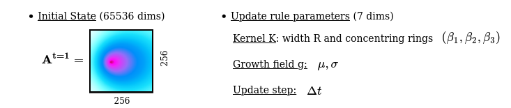
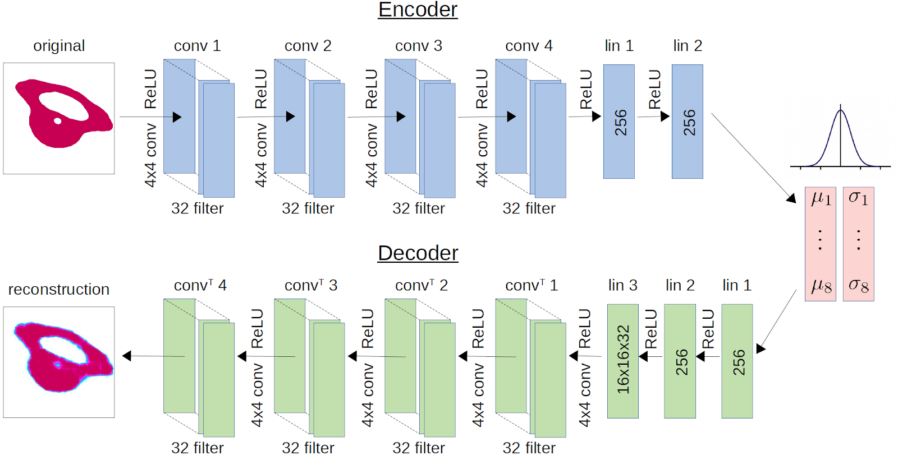

Motivation: Exploration of self-organizing systems
-
About a third of known galaxies are flat spirals with bulging centers. In a galaxy far, far away... / Mark Freeth / CC BY 2.0
-
The Tatra Mountains were shaped by past glaciations forming peaks, cirques and lakes. moutain / CC BY-NC-ND 2.0
-

Sand dune tend to self-organize in long parallel ripples. Sand Dune Patterns and Shapes / Jeff Sullivan / CC BY 2.0
-

The linear flight formations of a migratory flock of Sandhill Cranes. In Flight / CC BY 2.0
-

Honeybee colonies naturally swarm around tree limbs and shrubs. Beekeeping Bees / Rob Bertholf/ CC BY 2.0
-

The natural, hexagon geometry of a snowflake. Flakes In Situ / Pascal Gaudette/ CC BY-NC-SA 2.0
-

Spiral stair-stepped structure of bismuth crystal. Bismuth / CC BY-NC-SA 2.0
-

Every zebra has a unique pattern of black and white stripes. zebras / Kathleen Steeden / CC BY 2.0
-

Peacock feathers are decorated with eyelike patterns in bright blue and brown. Peacock / Esin Üstün / CC BY 2.0
-

Cells of bur-reed aquatic plants naturally thicken outer walls and arrange in V shape. Tannin Cells in Sparganium
Nature, from its spiral galaxies, shaped landscapes, organized populations, fine inorganic compounds and geometric animal skin patterns to its living cells, is made out of fascinating complex forms and patterns. These natural wonders are the results of a phenomenon called self-organisation, that characterizes the spontaneous emergence of some form of global order out of local interactions.
Self-organisation occurs in many physical, chemical and biological systems, as well as in artificial systems like the Game of Life, and understanding its processes remains an active area of research. While certain self-organizing systems are now well understood with advanced analytical models (Ball, 1999, Camazine et al., 2003), many others are still full of mysteries. Sometimes scientists do not even know yet a good mathematical expression of the basic physico-chemical properties at play, like in oil droplet systems used in studying the origins of life. For some other systems, like the Game of Life, one fully knows the simple basic rules at the local level, and yet we are still far from fully grasping what structures can self-organize, how to represent and classify them, and how to predict their evolution. In many cases, the discoveries of scientists about these systems are still relying on ad hoc trial-and-error experimentations.
“Becoming sufficiently familiar with something is a substitute for understanding it”
– John Conway, inventor of the Game of Life.
This blogpost presents our recent paper (ICLR 2020), where we formulate the problem of automated discovery of diverse self-organized patterns. Our motivation is to provide novel AI methods to automatically explore and map the diversity of possible emergent structures and, in turn, increase our global understanding of these fundamental systems.
Paper: Intrinsically Motivated Discovery of Diverse Patterns in Self-Organizing Systems.
Chris Reinke, Mayalen Etcheverry and Pierre-Yves Oudeyer.
In International Conference on Learning Representations, 2020.
Testbed system: A continuous Game of Life
We are interested in developing algorithms to autonomously explore a given target system which is characterized by a set of initial conditions (controllable system parameters) and a set of update rules (iteratively applied to evolve the state of the system through time).
We concentrate on morphogenetic systems, referring to processes by which individual parts of a developing system come to self-organize into forming a structured morphological pattern, mimicking the biological process of morphogenesis which governs the spatial distribution of cells during the embryonic development of an organism. Such systems are typically observed as raw high-dimensional images. We leave aside the question of how to design such a system, but for those interested make sure to read the last section of this post which discusses potential target systems for our approach including very exciting recent ones, ranging from “learnable” computational models, “wet” automated systems to “living” biologically synthetized organisms.
In this work, we tested our approach on an existing cellular-automata model. Cellular Automata (CA) are rich abstract computational models (capable of universal computation) and yet can be described with only a simple and compact set of rules. CA, despite their apparent simplicity, have shown to generate a wide range of complex behaviours and dynamics resembling phenomenas that we can observe in nature, making them very attractive models to study self-organization.

The lightweight spaceship

Gosper glider gun
The Game of Life (GoL), introduced in the 70’s by the mathematician John Conway, is probably the most famous example of cellular automaton. GoL is composed of a 2D grid square of cells, each cell being either “dead” or “alive”. At each time step, every cell interacts with its 8 neighbors and can survive, die or give birth according to very simple rules inspired from real life like “If the cell has enough neighbors (not isolated) and not too many (not overpopulated), the cell stay alive in the next time step (survival)”. Depending on the initial conditions or “seed” of the system (here the initial pattern), the cells can evolve and form various patterns, such as the well-knowns “spaceship” and “glider gun”.
In the paper, we use a recently-developed generalisation of Conway’s Game of Life, called Lenia. As shown in the below figure, Lenia extends Conway’s discrete GoL into a continuous GoL by:
1) replacing binary states with continuous float values
2) extending the 8-neighborhood to a circular neighborhood of parametrized radius R
3) weighting the neighbors influence by a parametrized concentric ring kernel K
4) replacing the if/else update rule by a smooth rule that computes the next state from a parametrized mapping function g and a step size $\Delta t$.


Lenia (latin for “smooth creatures”) can generate many interesting self-organized patterns. The below video showcases some examples of emerging structures, which have been discovered by its creator Bert Chan and which seem to look and behave like microscopic organisms:
However, finding these self-organized patterns has so far relied on manual exploration of the parameters and on the human eye to identify what an interesting pattern is. A major challenge is how we can automate this discovery process, which is the purpose of our method.
Automated discovery in complex systems
Naively exploring the parameters with random or systematic grid search is not efficient for the considered pattern-producing systems. Their parameter spaces are usually very high dimensional and, in cellular-automata like Lenia, a vast area of the parameters will tend to produce “dead” patterns (with all cells being zeros or ones). Therefore, random exploration will tend to fall into this area and miss out more interesting structures. How can we drive exploration in this high-dimensional parameter space in order to discover a high diversity of structures?
Lenia's "explorable" parameters:
Intrinsically-Motivated Goal Exploration Processes (IMGEPs)
We propose to transpose intrinsically-motivated or curiosity-driven goal exploration processes (IMGEPs), a recent family of machine learning algorithms initially developed for learning of inverse models in robotics, to our target application of automated pattern discovery. Before diving into the wonderful world of self-organized structures, let’s first explain the basics of IMGEP in a robotics experiment. As we well see, the two domains share many properties.
An IMGEP is an algorithmic process generating a sequence of experiments to explore the parameters of a system by targeting self-generated goals. Here we focus on population-based IMGEPs, simply denoted IMGEPs, but there also exist goal-conditioned IMGEPs using Deep RL techniques, such as CURIOUS, RIG and Skew-Fit.
Coming from the field of developmental robotics, these algorithms have shown to enable robots to autonomously explore their environment and to learn what effects can be produced by their actions. For instance, in the below video we see how a humanoid robot, which initially knows nothing about its environment, can explore its body movements and progressively discover how to interact with the various objects and tools in the scene (Forestier et al., 2017).
To explore a system, an IMGEP uses a goal space $\mathcal{T}$ that represents relevant features of the observation $o$, computed using an encoding function $\hat{g}=R(o)$.
As shown in the below figure, the exploration process iterates N times through:
- sample a goal from a goal sampling distribution $g \sim G(H)$
- infer corresponding parameter $\theta$ using a parameter sampling policy $\Pi= Pr(\theta;g,H)$
- roll-out an experiment with $\theta$, observe the outcome $o$, compute encoding $R(o)$
- store the parameter-outcome pair in an explicit memory of the history $H$
In this example, the parameter-space was a 32-dimensional dynamic motion primitive and the goal space described the trajectories of the different objects in the world (such as the ball or the white toy). The IMGEP goal-sampling strategy consisted in targeting goals that maximize the learning progress of the robot.
-
IMGEPs applied to developmental robotics systems

-
IMGEPs applied to morphogenetic systems

As illustrated by the above figure, the IMGEP framework can be transposed to our target application of automated pattern discovery. Here, the actions of our artificial “scientist” agent consist in choosing a set of values for the initial conditions (parameters $\theta$), then let the system rollout and observe the emerging pattern evolve through time (observation $o$). We aim to maximize the diversity of observations within a limited budget of N experiments.
Different goal and parameter sampling mechanisms can be used within the IMGEP framework. Here, we adopted the following strategy:
- parameters are sampled by 1) given a goal, selecting the parameter from the history whose corresponding outcome is most similar in the goal space; 2) mutating it by a random process.
- the goal sampling policy is a uniform distribution over a hypercube in $\mathcal{T}$ chosen to be large enough to bias exploration towards the frontiers of known goals and incentivize diversity (thus we do not use learning progress as in the robot experiment above, but such an approach was shown to be already a strong form of IMGEP with dynamics similar to novelty search).
However, several challenges arise in order to successfully apply this strategy.
First challenge: How to characterize “relevant features” of the observed patterns?
For IMGEPs the definition of the goal space $\mathcal{T}$ and its corresponding encoder $R$ are a critical part. In the robotic example, the experimenter had prior knowledge about what are relevant descriptors of the robot trajectory and could use them as goal space. However in our setting, we do not know what are useful features to characterize the patterns. Features that describe their form and extension might be interesting options, but how to define and compute them from the raw pixel observations is unclear.
Another approach is to learn goal space features by unsupervised representation learning, using a neural network to learn the mapping $R: O \rightarrow \mathcal{T}$. For instance, recent work in goal-directed exploration for robotics uses deep variational autoencoders (VAEs) to map the raw pixel perception of a robot’s visual scene to compact goal representations.
Learning of goal space with deep Variational Auto-Encoder networks (VAE):
VAEs are trained to reconstruct an input image after compressing it into a compact latent representation (only 8 dimensions here). The training criterion is the pixel-wise reconstruction error between the input image and the reconstructed output. VAEs do not need any supervision, removing the need for human expert knowledge to extract descriptors out of the patterns.
In previous population-based IMGEP approaches (Péré et al., 2018; Laversanne-Finot et al., 2018), the VAE was learned on a prerecorded dataset of observations before the actual start of the exploration, and then kept fixed during exploration. This approach can be problematic in our case, as a fix set of precollected examples can hardly be representative of the actual diversity of patterns that the system can produce, limiting the possibilities to discover novel patterns beyond the distribution of pretraining examples.
Therefore, we incorporate the training of the VAE in an online manner during exploration. The autoencoder is trained periodically, for instance every 100 exploration runs, on all the patterns explored so far. Importance sampling is used to give more weight to recently discovered patterns. A similar framework to ours has also been used in the context of goal-directed reinforcement learning (Nair et al., 2018; Pong et al., 2019).
Second challenge: How to effectively parametrize the initial state ?
Another critical part for the success of IMGEPs in systems with high-dimensional parameter spaces, is the ability to effectively encode and initialize the initial state. A key ingredient in the case of robots to explore their surroundings was the use of dynamic motion primitives (DMPs) to encode the space of body motions and produce structured movements over time.
In the same way as it is inefficient for a robot to explore its body actions from the perspective of low-level actuator commands, it is inefficient in our case to explore and generate patterns from the pixel-wise perspective. We need an efficient way to encode and randomly initialize Lenia’s initial state (256x256 grid cell). Using a simple random initialization of each individual cell will generate white noise patterns which tend to evolve into dead or global patterns spanning the whole grid, missing out other structures such as spatially localized patterns.
Problem with random sampling of initial states:

We solved the sampling problem for the initial states by transposing the idea of structured primitives into a similar mechanism using Compositional Pattern Producing Networks (CPPNs). CPPNs are recurrent neural networks that allow us to generate structured patterns, as shown in the above figure. The CPPNs are used as part of the parameters $\theta$ and are defined by their network structure (number of neurons, connections between neurons) and their connection weights. CPPNs can be “evolved” using random mutations for their weights and structure. We use this process of random mutations in our parameter sampling strategy. To summarize, CPPNs provide us an efficient way to produce structured patterns and to smoothly evolve already explored configurations.
Compositional Pattern Producing Networks (CPPN):


For a better understanding on CPPN and how they can be used, we recommend this blogpost.
Results of our automated discoveries
We used our method to identify a high diversity of patterns in Lenia and evaluated its performance with other algorithms.
To get a better insight into the results, this section first provides examples of “interesting” identified patterns; then discusses the differences between the discovered patterns by several IMGEP variants; and finally proposes a quantitative way to evaluate the obtained diversity.
Examples of identified patterns
These videos showcase some patterns that were autonomously discovered by our approach (IMGEP with online learned goal space). These results, that we subjectively qualify as interesting, seem to suggest that our artificial “scientist” is able to discover complex patterns resembling both the “animal patterns” manually identified by Lenia’s creator and “global patterns” with interesting spreading dynamics.
Impact of the choice of the representation
One of the most striking points of our results is that the choice of the representation for the goal space will strongly bias the results of exploration.
To illustrate this, we show below the complete database of discoveries that were made by three variants of our IMGEP algorithm, namely:
- IMGEP-OGL: main IMGEP variant that uses, as goal space representation, a VAE that is trained in an online manner on the patterns discovered during the exploration process
- IMGEP-HGS: IMGEP variant that uses a hand-defined goal space representation composed of 5 features, proposed in the original Lenia’s paper, that characterize typical computer-vision properties of the final patterns (such as the activity, density and (as)symmetry)
- IMGEP-RGS: an ablated IMGEP variant that uses, as goal space representation, a randomly-initialized neural embedding network (with the same architecture than the VAE’s encoder of the main variant)
As we can see, using a learned (OGL), hand-defined (HGS) or random (RGS) goal space will have a strong influence on the final discoveries of the IMGEP. It seems that IMGEP-OGL is more inclined to discover spatially localized patterns whereas IMGEP-HGS is more inclined toward global patterns and IMGEP-RGS toward high-frequency “stripes” patterns. These findings strongly suggest that the ability of a representation R to better describe and discriminate a certain type of patterns will drive the IMGEP to find a high diversity for this type of patterns. For instance, in our IMGEP-OGL experiment the VAE learned to encode the general form and shape of patterns but ignored fine-grained structures (as it is well known VAEs can poorly reconstruct high-frequency details). As a consequence, all the fine-grained “texture” patterns are occupying a small area of the goal space, and therefore are less often sampled as target goals during the IMGEP exploration process.
Diversity of identified patterns
Our main motivation is to find a high diversity of patterns.
To evaluate if our approach discovers a higher diversity than other approaches we propose to measure the diversity of a discovered set of patterns by the area it covers when projected in an analytic behavior space.
This space is externally defined by the experimenter and the covered area is measured by binning the space and counting the number of explored bins.
Because we do not have access to an easily interpretable low-dimensional behavior space, we constructed it by concatenating (i) features learned by a VAE trained on a very large dataset of Lenia patterns (allowing to cover order of magnitude more patterns that what could be found in any single algorithm experiment); and (ii) 5 hand-defined features from the original Lenia’s paper.
We also measured the diversity in the space of parameters by concatenating Lenia’s parameters $(R, T, \mu, \sigma, \beta_1, \beta_2, \beta_3)$ and the latent representation of a VAE trained on a large dataset of initial Lenia states ($A^{t=1}$).
Additionally, we categorized the patterns into 3 families: dead (the activity of all grid cells being either 0 or 1), animal (finite and connected pattern of activity) and non-animal (remaining - usually spread over the whole state space). This categorization follows the identification of spatially localized patterns (SLPs) or solitons in Conway’s Game of Life, equivalent to what we call “animals” in Lenia, versus other global patterns. These categories allow us to analyze the exploration behaviors of the different IMGEP variants in identifying a certain type of pattern (as we could qualitatively observe by visually browsing the results).
Using this procedure, the exploration behaviors of different IMGEP variants were evaluated and compared to a naive random exploration.
(a) Diversity in Parameter Space:

(b) Diversity in Statistic Space:

(c) Statistic Space Diversity for Animals:

(d) Statistic Space Diversity for Non-Animals:

The above graphs show the evolution of the diversity for each algorithm over the 5000 explorations that they performed. We draw the following conclusions:
- (a-b): Even though random parameter exploration tries more diverse configurations in the input parameter space (a), IMGEP with hand-defined (HGS) or learned (PGL/OGL) goal space find a higher diversity in the analytic behavior space than random exploration (b). This confirm that goal exploration algorithms outperforms random parameter exploration to discover diverse patterns.
- (b-c-d): using random features (RGS) collapsed the performance of goal exploration, and did not even outperform random parameter exploration for all kinds of behavioural diversity, showing the importance of having informative goal spaces.
- (c): IMGEPs with a learned goal space (PGL/OGL) discovered a larger diversity of animals compared to a hand-defined goal space (HGS). These results uncover an interesting bias of using learned features with a VAE architecture, which strongly incentivizes discovery of diverse spatially localized patterns (called “animal” patterns).
- (b-c): The new online approach (IMGEP-OGL) is as efficient as a pretrained approach (IMGEP-PGL) to discover diverse pattern, even though PGL was pretrained on a dataset containing already 50% animal. This showed that it is feasible to learn goal spaces for such systems in an online manner removing the need to collect preliminary data.
- (d): Learned goal spaces (PGL/OGL) are as efficient as a hand-defined space for finding diverse non-animals patterns.
Related work & Research perspectives
Simulate self-organizing systems: toward more expressive models
To better understand relations between the individual cell dynamics and the global pattern formation processes, many mathematical and computational models have been proposed. These models can be categorized into three main families: partial differential equations (PDEs), cellular automata (CAs), and agent-based models (ABM):
- PDEs are based on continuous mathematical descriptions (differential equations) that describe the space-time evolution of chemical morphogens substances. From Alan Turing’s influential paper “The Chemical Basis of Morphogenesis” in 1952, which introduced a prototype model of reaction-diffusion equations for describing pattern-formation mechanisms of animals’ skins, this family of models is pioneer in modelling self-organizing systems.
- CAs, contrary to continuous approaches that study populations at a global level, model each element or cell individually, as well as their interactions. The concept of cellular automata was introduced by John von Neumann in the 40’s and became very popular in the 70’s with Conway’s Game of Life.
- ABMs are multi-agent systems that consider cells as entities or agents (no shape constraints contrary to CAs fixed-square grid) which are locally interacting in their environment. Various ABM systems have been proposed in computational biology to study tissue formation (Chaturvedi et al., 2005, Belmonte et al., 2008), mainly differing by the choice of the physical representation of the agent and of its behaviors.
All these approaches to model real-word complex systems are abstract simplifications of reality. However, these numerical models have permitted to study key aspects of collective behaviors (Viksek & Zafeiris, 2010), spontaneous formation of spatial patterns (Gardner, 1970) and self-replication (Langton, 1984), as well as bringing clear experimental advantages in terms of time, budget and controllability.
Moreover, we observe a recent renewal of interest in research around these models, with the rise of extended versions of the traditional models (SmoothLife, Lenia) and the introduction of novel data structures such as convolutional neural networks (CNNs) (Cellular automata as convolutional neural networks) and graph neural networks (GNNs) (Pathak et al, 2019). These recent models bring a new level of expressivity and show the emergence of more complex life-like structures (such as Lenia’s “lifeforms”).
Understand self-organizing systems: novel machine learning perspectives
Designing such systems, that show desirable properties (e.g. self-regeneration, self-replication) without any form of centralized control, brings a lot of engineering / programming challenges, especially when moving toward richer models (with more neighbors and continuous state/space like Lenia). For these reasons recent work proposes to rely on powerful optimization techniques, such as evolutionary strategies (CA-NEAT, Learning to Control Self-Assembling Morphologies) or deep learning techniques (Growing Neural Cellular Automata) to help designing and/or controlling such systems.
We position ourselves in this pan of literature, but with a different perspective: rather than optimizing a given system to achieve a desired property, we are interested in exploring the system to discover a diversity of interesting properties. However, in the same way that reinforcement learning optimization has been successfully coupled to IMGEPs goal-generation algorithms in robotics, a promising future direction is to couple (i) IMGEPs to automatically discover “interesting” behaviors of a system (ii) evolutionary / deep learning / reinforcement learning based optimization techniques to understand and replicate these behaviors from different initial conditions.
Manipulate self-organizing systems: high-precision automated laboratory
There has also been recent developments for automating robotic platforms in the experimental laboratory (Dropfactory, organic synthesis robot), once again going in pair with the introduction of novel machine learning algorithms for advanced optimization in the experimentations (ML-assisted material discovery, ML meets continuous flow chemistry). These automated experimental platforms offer novel levels of precision and control and open new opportunities to review the way scientific experiments can be performed.
A parallel work to ours, Grizou et al., 2020, showed how intrinsically motivated goal exploration can be used to automate discovery of novel patterns in wet chemical systems. The system of interest is here an oil droplet system, used to study questions about the origins of cells. Depending on the chemical composition of the droplets, the system shows patterns like division, chaining or grouping. Scientists do not fully understand their underlying dynamics and it takes too long to explore all possible chemical combinations. This work has shown that IMGEPs, combined with a robotic experimentation platform, could discover a larger diversity of behaviors in the chemical droplet system.
We plan, in future work, to apply our novel algorithmic contributions (automatic learning of goal space representations) to more complex “wet” systems.
In silico, in vitro, soon in vivo?
Finally, near future research will probably happen at the frontier of simulated machine environments (“in silico”), controlled experimental conditions (“in vitro”) and potentially directly in living organisms (“in vivo”). With the advances in synthetic biology and powerful novel technologies such as bio-printing, we can hope to create functional tissues or organs for in vivo applications such as regenerative medicine and drug discovery. The recent work of Kriegman et al., 2020, into which evolutionary algorithms at the computer level where directly transposed to “engineer” a new kind of living organism, the so-called xenobots, is an exciting proof of concept in that direction.
Conclusion
Our paper demonstrates how intrinsically-motivated goal exploration processes algorithms can efficiently be transposed to a new kind of problem: automatic discovery of diverse self-organized patterns in morphogenetic systems such as the Game of Life. In further work, we plan to apply this approach to “wet” systems and aim to better understand the (fundamental) process behind proto-cells self-organization.
Aknowledgements
We would like to thank Bert Chan and Jonathan Grizou for valuable discussions.
Additional Material
- Paper: Intrinsically Motivated Discovery of Diverse Patterns in Self-Organizing Systems. Reinke, Etcheverry and Oudeyer, 2020. In International Conference on Learning Representations (ICLR 2020).
- Project Website with additional videos and complete database of the results
- Code
References
- The Self-Made Tapestry: Pattern Formation in Nature. Philip Ball, 1999.
- Self-organization in biological systems. Camazine et al., 2003.
- Evolution of oil droplets in a chemorobotic platform. Gutierrez et al., 2014.
- Cellular automata as models of complexity. Wolfram, 1984.
- Lenia-biology of artificial life. Bert Chan, 2018.
- Active Learning of Inverse Models with Intrinsically Motivated Goal Exploration in Robots. Baranes & Oudeyer, 2013.
- CURIOUS: Intrinsically Motivated Modular Multi-Goal Reinforcement Learning. Colas et al., 2018.
- Visual reinforcement learning with imagined goals. Nair et al., 2018.
- Skew-Fit: State-Covering Self-Supervised Reinforcement Learning. Pong et al., 2019.
- Intrinsically Motivated Goal Exploration Processes with Automatic Curriculum Learning. Forestier et al., 2017.
- Exploiting Open-Endedness to Solve Problems Through the Search for Novelty. Lehman & Stanley, 2008.
- Auto-Encoding Variational Bayes. Kingma & Welling, 2013.
- Unsupervised Learning of Goal Spaces for Intrinsically Motivated Goal Exploration. Péré et al., 2018.
- Curiosity Driven Exploration of Learned Disentangled Goal Spaces. Laversanne-Finot et al., 2018.
- From dynamic movement primitives to associative skill memories. Pastor et al., 2013.
- Exploiting regularity without development. Stanley, 2006.
- “The Chemical Basis of Morphogenesis”. Turing, 1952.
- On multiscale approaches to three-dimensional modelling of morphogenesis. Chaturvedi et al., 2005.
- Self-Propelled Particle Model for Cell-Sorting Phenomena. Belmonte et al., 2008.
- Collective motion. Viksek & Zafeiris, 2010.
- Mathematical games: the fantastic combinations of John Conway’s new solitaire game ‘Life’. Gardner, 1970.
- Self-reproduction in cellular automata. Langton, 1984.
- Generalization of Conway’s “Game of Life” to a continuous domain - SmoothLife. Rafler, 2011.
- Cellular automata as convolutional neural networks. Gilpin, 2018.
- Learning to Control Self-Assembling Morphologies: A Study of Generalization via Modularity. Pathak et al., 2019.
- CA-NEAT: Evolved Compositional Pattern Producing Networks for Cellular Automata Morphogenesis and Replication. Nichele et al., 2018.
- Growing Neural Cellular Automata. Mordvintsev et al., 2020.
- A curious formulation robot enables the discovery of a novel protocell behavior. Grizou et al., 2020.
- Controlling an organic synthesis robot with machine learning to search for new reactivity. Granda et al., 2018.
- Machine-learning-assisted materials discovery using failed experiments. Raccuglia et al., 2016.
- Machine learning meets continuous flow chemistry: Automated optimization towards the Pareto front of multiple objectives. Schweidtmann et al., 2018.
- A scalable pipeline for designing reconfigurable organisms. Kriegman et al., 2020.
Contact
Email: mayalen.etcheverry@inria.fr, chris.reinke@inria.fr, pierre-yves.oudeyer@inria.fr